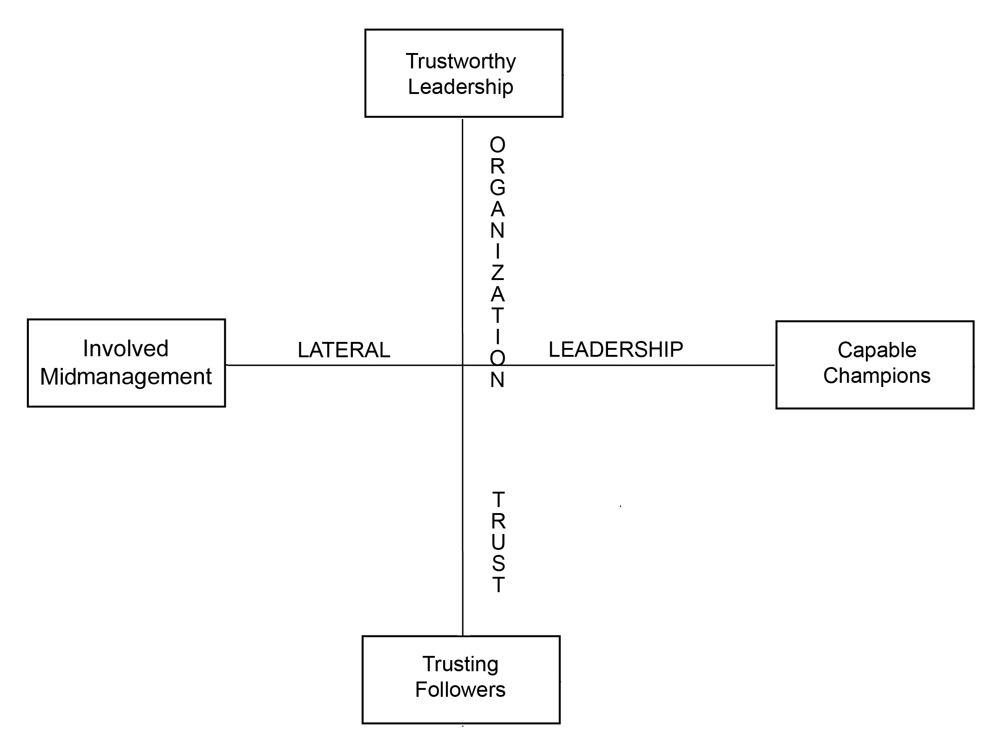

Recall that there are eight dimensions of organizational capacity for change. The first four dimensions focus on the human capital within your firm. These dimensions focused on your human capital are depicted in Figure 11.1 "The Human Capital Required for Organizational Capacity for Change". The first two dimensions, trustworthy leadership and trusting followers, are oriented toward producing organizational trust to the greatest extent possible. Organizational trust refers to the ability of members of an organization to put their lives and well-being at risk in service to the well-being of the overall organization. Hence, it refers to how much frontline workers trust middle managers and senior executives to watch out for their interests. Similarly, it addresses how much top executives trust middle managers and frontline workers to do their jobs well. Trust suggests that we perceive the other as not only competent but also genuinely concerned about the general well-being of others.Gilbert (2005).
The second two dimensions, capable champions and involved midmanagement, are oriented toward unleashing the power of lateral leadership. Lateral leadership is concerned with getting things done across organizational units and functional areas of expertise.Fisher and Sharp (2004). The hierarchical organization will always be with us, but the power of hierarchical authority is diminishing. In its place is the power of influence without authority, in other words, lateral leadership. Crisis situations demonstrate this power quite clearly. When a crisis occurs, people often self-organize into social groups that do amazing things in inexplicably short amounts of time. The trick here is to enable the organization to self organize. In this book, I have emphasized the importance of creating change champions and involving middle management in the change process so that lateral leadership can occur. Figure 11.1 "The Human Capital Required for Organizational Capacity for Change" contains a graphical depiction of the two organizational attributes dealing with human capital in change capable organizations.
Figure 11.1 The Human Capital Required for Organizational Capacity for Change
Organizations also require adequate social infrastructure in order to be change capable. Social infrastructure is the means by which organizational members come to understand and deal with the life of the overall organizational system. One key attribute that is part of the social infrastructure is the level of systemic knowledgeThe degree to which members of an organization understand and focus on the organizational system. within the organization. Systemic knowledge is the degree to which members of an organization understand and are focused on the overall organizational system. Too often, members focus on just their careers or just their organizational subunit. When a critical mass of the organization becomes focused on the overall life of the organizational system, the organization becomes much more open to the environment. This openness translates into more agility and flexibility within the system.Oshry (1996).
The fourth and final organizational attribute that is fundamental to change capability is cultural ambidexterityAn organization’s balancing accountability with innovation.. Many observers note the powerful role that organizational culture plays in facilitating or thwarting organizational change. What is often missed, however, is that change-capable organizations balance accountability with innovation. If the organization overemphasizes accountability, innovation suffers. And if innovation is the sole focus, accountability is ignored. Change-capable organizations optimize on both of these seemingly contradictory cultural virtues.Quinn (1991). Hence, the organization needs to become ambidextrous culturally, using the right-handed accountability norms in balance with the left-handed innovation norms.Judge and Blocker (2008).